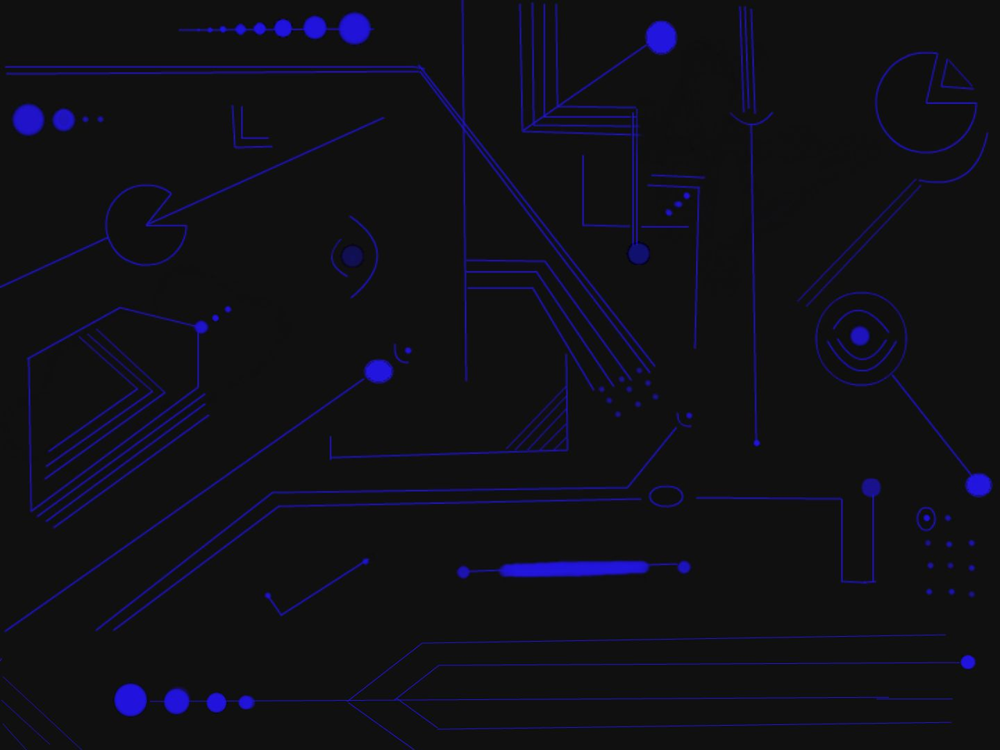

AI PING PONG GAME

Developed By: Harini.C.L
- First Keep Your Laptop Screen Straight
- Move Yourself Away Approximately 3-4 Feet Away From The Laptop
- move Your Riight wrist In An Ascending And Decending Manner,A Red Dot Should Appear On Your Right Wrist
- now Press The PLay Button,And Again Move Yourself 3-4 Feet away From Laptop
- The Red Paddle Is Your Paddle,That Will move As Per Your Movement Of Your Right Wrist